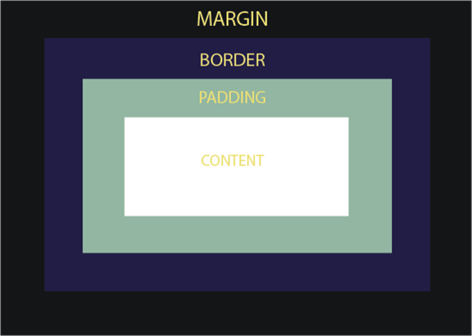

Structure, Phrasing, and Display
Elements in HTML are usually divided into two different types inline elements and block level elements. An inline element doesn't cause a new line to form. It only takes up the space between the opening and closing tags. Some examples of inline elements are anchor, emplasis, and image tags. Block level elements cause a line break and take up the whole width of the page. Some examples are heading, list, blockquotes, and div tags.The div element in the paragraoh can be used to divide the page and make it easier to add properties to that specific section.
Box Model
The CSS box model standards is what the browser uses to represent each element in a rectangular box. CSS determines the size, color, and more of these boxes. The box is made up of 4 parts: the content, padding, border, and margin edges. The box-sizing element can be set to border box, meaning that the borer area's size can be explicitly defined with the width and height.

Background Images
Using the image tag in HTML indicates that the image will be used as a foreground image while the image in CSS will be used as a background for an element. The image in CSS can be repeated, used as a cover, or you can have it scroll with the page.